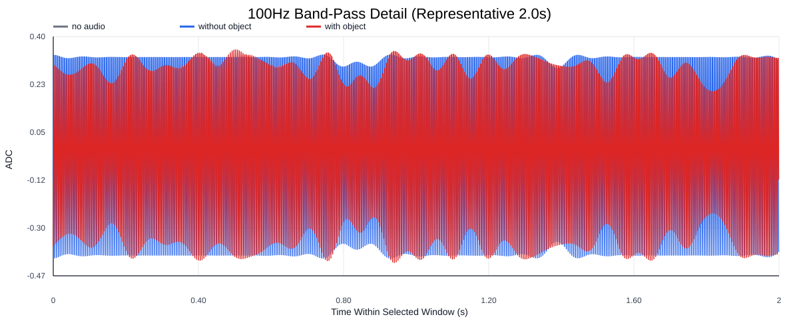
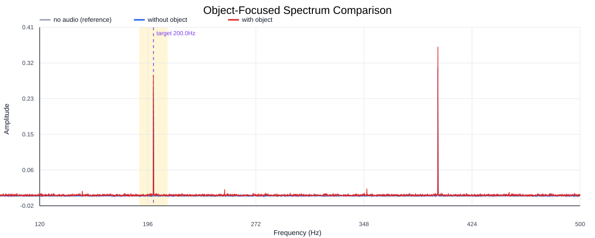
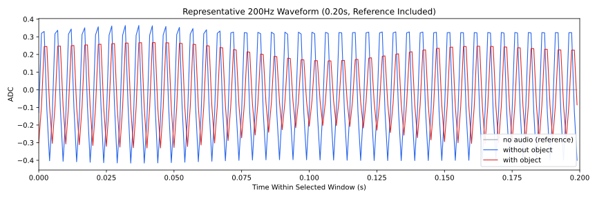
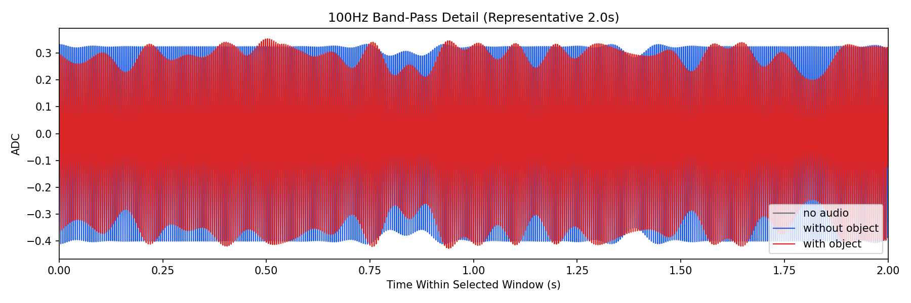
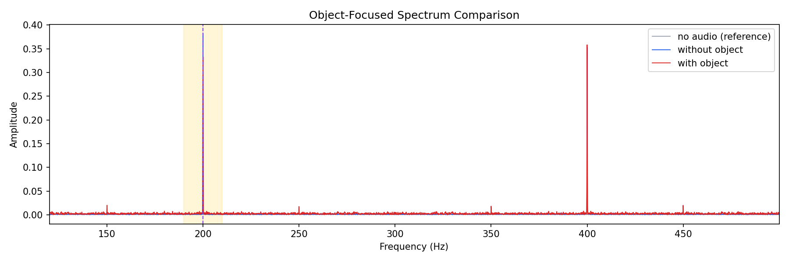
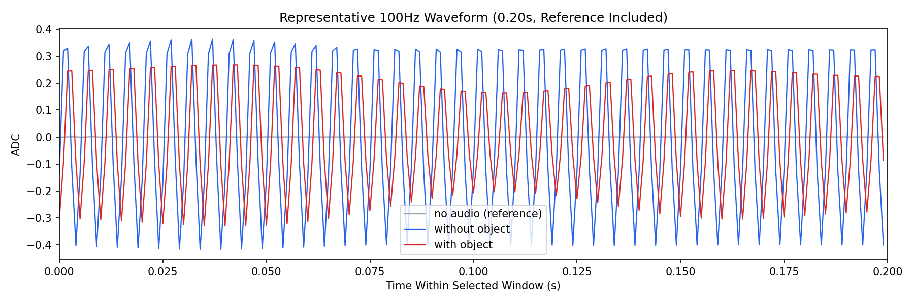

Background: F:\项目类文件夹\异物检测4.10\Data_Dual\frequency_sweep\0200Hz\repeat_04\raw\no_audio.csv
Without object: F:\项目类文件夹\异物检测4.10\Data_Dual\frequency_sweep\0200Hz\repeat_04\raw\without_object.csv
With object: F:\项目类文件夹\异物检测4.10\Data_Dual\frequency_sweep\0200Hz\repeat_04\raw\with_object.csv
| Metric | 无音频 | 100Hz无异物 | 100Hz有异物 | 无异物/无音频 | 有异物/无异物 | 有异物/无音频 |
|---|---|---|---|---|---|---|
| centered_rms | 1.164586 | 0.393831 | 0.386469 | 0.3382 | 0.9813 | 0.3319 |
| raw_target_amp | 0.000777 | 0.382198 | 0.332771 | 491.9150 | 0.8707 | 428.2990 |
| filtered_rms | 0.253831 | 0.271667 | 0.259323 | 1.0703 | 0.9546 | 1.0216 |
| filtered_target_amp | 0.000777 | 0.382198 | 0.332771 | 491.9298 | 0.8707 | 428.3120 |
| filtered_energy_ratio | 0.047506 | 0.475833 | 0.450249 | 10.0163 | 0.9462 | 9.4778 |
| window_filtered_target_amp_mean | 0.009684 | 0.382927 | 0.364509 | 39.5438 | 0.9519 | 37.6417 |
| window_filtered_target_amp_std | 0.062180 | 0.022224 | 0.022750 | 0.3574 | 1.0236 | 0.3659 |





